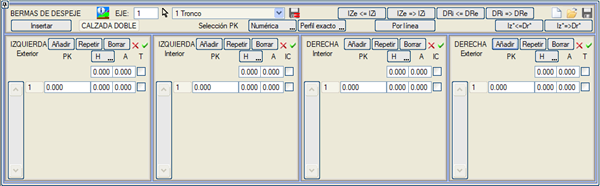

Görüş palyesi, görüş alanını engelleyen ve güzergah algısını bozan durumlarda yarma şevini platformdan uzaklaştırmak amacıyla hendek ile yarma şevi arasına, hendekten önce veya kaplamalı banketten önce eklenebilen bir enkesit bölümüdür.

[Kaydet]  , [Yükle] , [Yükle]  ve [Araya Ekle] düğmeleri, görüş palyeleri tanımını içeren bir dosyayı kaydetmek ve geri yüklemek için kullanılabilir. Dosyalar .bdj uzantılıdır ve hem bu menüden hem de bir GÖRÜŞ MESAFESİ etüdünden gelebilir. ve [Araya Ekle] düğmeleri, görüş palyeleri tanımını içeren bir dosyayı kaydetmek ve geri yüklemek için kullanılabilir. Dosyalar .bdj uzantılıdır ve hem bu menüden hem de bir GÖRÜŞ MESAFESİ etüdünden gelebilir.
Program, çeşitli görüş palyesi tiplerini destekler:
- Dış Tip: Palye, hendek ile yarma şevi arasına eklenir.
- İç Tip: Görüş palyesi, en dıştaki banket ile palye arasına yerleştirilir. Bu palye, yarma palyesinde tanımlanan [İÇBÜKEY OLMAYAN/İÇBÜKEY] düğmesine uyar. Eğer yarma palyesinde bir basamak tanımlanmışsa, bu basamak iç görüş palyesinin başlangıcında gerçekleştirilir.
- İç Hendek Tipi: Görüş palyesi, yarma palyesi ile hendek arasına yerleştirilir.
Görüş palyesi, kilometre bazında bir tabloda tanımlanır ve her veri için her iki tarafta bir segment belirlenir. Her segment bir genişlik (A) ve ya bir kot farkı (H) ya da bir eğim (P) ile tanımlanır. Böylece, platforma doğru %10 eğimli 1 m'lik bir görüş palyesi, A=1.0 ve H=0.1 veya P=10 değeriyle tanımlanır.
Dış Palye: Bu dış palyenin dolguda ve sanat yapılarında da uygulanma imkanı vardır. Bu durumda, palyelerin içeriden dışarıya doğru sıralaması şu şekilde olacaktır:
- İç Görüş Palyesi -> Dolgu Palyesi -> Güvenlik Bariyeri Palyesi -> Dış Görüş Palyesi.
Eğer İç Görüş Palyesi iç-hendek tipindeyse, dolgu palyesi ile yer değiştirir.
[Çizgiye Göre] seçeneği, A ve H değerlerini 3B bir çizgiden veya 2B bir çizgi ve palye eğiminden hesaplamayı sağlar. Ayrıca dış, iç ve iç hendek tipleri de seçilebilir. Yeni veriler mevcut veri listesine eklenir. Her bir H, P%, A, IC veya T sütunundaki tüm verilere aynı anda bir değer atamak mümkündür.

|
Görüş palyesi tablosunu bu menüde oluşturmak yaygın bir uygulama değildir. GÖRÜŞ MESAFESİ menüsünü kullanmak çok daha kolaydır. İncelenen eksenin tam geometrisinin ilk hesaplaması yapıldıktan sonra, bu araçtan bir veya daha fazla görüş mesafesi ve güzergah algısı kaybı etüdü yapılır ve gerek görülürse görüş mesafesi koşullarını sağlamak için gerekli olan görüş mesafesi hesaplanır.
Bu analizden sonra, görüş palyesi veri dosyasının (.bdj) oluşturulması komutu verilir. Bu menüye geri dönülür ve GÖRÜŞ MESAFESİ menüsünde oluşturulan .bdj dosyası yüklenir veya araya eklenir. Veriler gözden geçirilip gerekli düzeltmeler yapıldıktan sonra, düzeltilmiş .bdj ve eksenin .vol dosyası kaydedilir. Şimdi yapılacak bir hesaplama, yeni geometriyi oluşturacaktır.
Gerekli görülürse, hesaplanan palyenin projenin görüş mesafesi gerekliliklerini karşılayıp karşılamadığını grafiksel ve sayısal olarak kontrol etmek veya hız sınırlamalarını, işaretlemeleri vb. belirleyecek olan kalan güzergah algısı kayıplarını incelemek için GÖRÜŞ MESAFESİ menüsüne geri dönülebilir. |
|